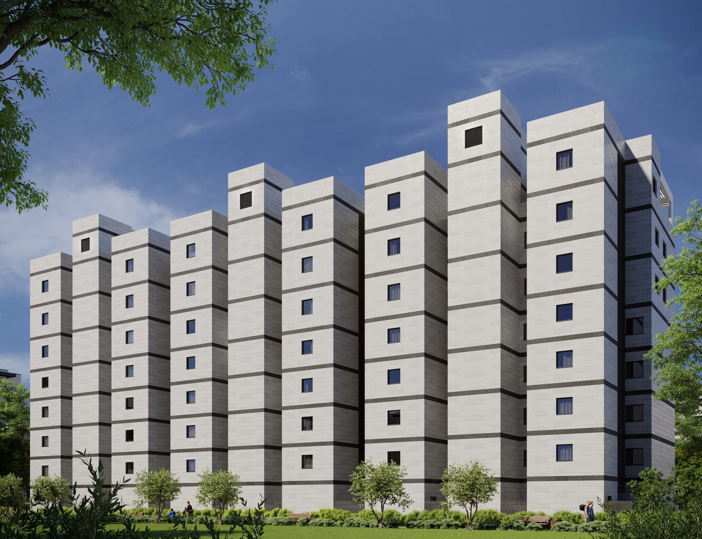
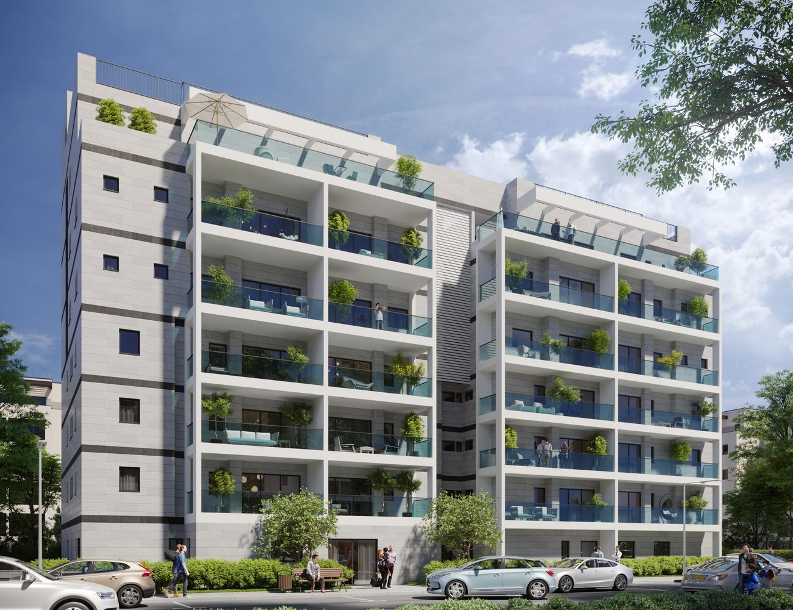

הושלם · אוכלס
הלילך · רחוב שהתחדש.
שישה בנייני בוטיק מודרניים שהחליפו רחוב ותיק שלם ביבנה — שלושה במסלול תמ"א 38 ושלושה בפינוי-בינוי, סביב גינה ציבורית מטופחת.
שישה בנייני בוטיק מודרניים שהחליפו רחוב ותיק שלם ביבנה — שלושה במסלול תמ"א 38 ושלושה בפינוי-בינוי, סביב גינה ציבורית מטופחת.
רוב פרויקטי ההתחדשות מטפלים בבניין בודד. בהלילך, שלי גרופ לקחה על עצמה רחוב שלם: שישה בניינים בכתובות הלילך 3, 5 ו-7 — שלושה שחוזקו והורחבו במסלול תמ"א 38, ושלושה שפונו ונבנו מחדש בפינוי-בינוי. התוצאה היא שכונה קטנה ועקבית, בשפה אדריכלית נקייה אחת, סביב הגינה הציבורית שבמרכז.
רחוב שלם בלב השכונה הוותיקה
3 במסלול תמ"א 38 · 3 בפינוי-בינוי
עיצוב נקי ואורבני, קנה מידה אנושי
המשפחות כבר גרות — הוכחה בנויה, לא הבטחה
האתגר בפרויקט כפול-מסלולים הוא לשמור על אחידות: תמ"א 38 מחזקת ומרחיבה בניין קיים, בעוד פינוי-בינוי בונה מהיסוד. בהלילך שני המסלולים תוכננו יחד, כמקשה אחת — אותם חומרי גמר, אותה שפת חזיתות, אותם פתרונות פיתוח — כך שהעובר ברחוב לא מבחין היכן נגמר מסלול אחד ומתחיל השני.
כל דירה בפרויקט קיבלה את מה שהופך בניין ישן לבית עכשווי: ממ"ד, מרפסת שמש, מעלית ושדרוג מלא של התשתיות. הדיירים הוותיקים חזרו לדירות גדולות וחדשות — בלי לעזוב את השכונה, השכנים ובתי הספר שהם מכירים. המצטרפים החדשים קיבלו בנייני בוטיק בקנה מידה אנושי, בשכונה עם שורשים.
התחדשות של רחוב שלם משנה גם את הכלכלה של הנכסים: כשכל הבניינים ברחוב מתחדשים יחד, ערך הדירות עולה כמקשה אחת — אין "בניין חדש ליד חורבה" שמושך את המחיר למטה. הגינה המשותפת, הפיתוח האחיד והתאורה הרחובית החדשה הפכו את הלילך מרחוב חולף לכתובת מבוקשת.
הפרויקט הושלם, נמסר ואוכלס — והוא משמש היום דוגמה חיה למה ששלי גרופ מתכוונת אליו כשהיא אומרת "מהתכנון ועד מסירת המפתח": יזם וקבלן ג'5 באותו בית, שמתחייב לרחוב שלם ועומד בזה.
כל התמונות הן הדמיות אדריכליות להמחשה בלבד ואינן מהוות מצג מחייב.


רחוב הלילך יושב בלב השכונות הוותיקות של יבנה — סביבה שקטה ומבוססת, במרחק הליכה מבתי ספר, גנים ומרכז מסחרי שכונתי. הגינה הציבורית שבמרכז הרחוב, שטופחה כחלק מהפרויקט, הפכה למוקד המפגש של הדיירים הוותיקים והחדשים.
מהשכונה יוצאים בנוחות לצירי התנועה הראשיים של יבנה, לתחנת הרכבת ולכבישים המהירים — 20 דקות מתל אביב, ורבע שעה מאשדוד.
הלילך הוא ההוכחה שאפשר אחרת. אם אתם נציגות בניין או דיירים שרוצים לבחון תמ"א או פינוי-בינוי — דברו איתנו.